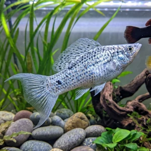

Nome popular principal
Molinésia
Molinésia, Molly, Molinésia-Negra, Molinésia-Latipina
Ficha de peixe
Poecilídeos
Um peixe vivíparo alegre e versátil que se adapta bem a aquários comunitários de água alcalina.

Nome popular principal
Molinésia, Molly, Molinésia-Negra, Molinésia-Latipina
Nome científico
Nome técnico essencial para taxonomia, cruzamento de manejo e referência editorial consistente.
Dificuldade de manejo
Use este nível como referência inicial, sempre considerando volume, estabilidade e compatibilidade do aquário.
Seção 1
Seção 2
Seções 4 a 6
Molinésia tem hábito alimentar onívoro. Excelente. 1 a 2 vezes ao dia em pequenas porções. Necessita de boa carga de matéria vegetal na dieta, aceitando flocos, espinafre branqueado e rações com spirulina.
Machos possuem gonopódio e são menores; fêmeas são maiores e têm o ventre mais abulado. Tipo de reprodução: Vivíparo. Dificuldade de reprodução: Fácil. Dão à luz alevinos já formados periodicamente, necessitando de plantas ou refúgios para proteção da prole.
Alta. Substrato recomendado: Cascalho fino ou areia de rio. Necessidade de esconderijos: Média. Aprecia plantas de crescimento rápido e decoração com pedras e troncos que facilitem a formação de algas benéficas.
Seção 7
Pode atingir até 12 cm dependendo da variedade e vive até 5 anos sob manutenção constante de água limpa.
Seção 8
Não é obrigatório, mas a espécie tolera e até se beneficia de uma leve salinidade, pois vive naturalmente em estuários de água salobra.
A Molinésia prefere águas moderadamente duras e alcalinas, com o PH ideal situado entre 7.2 e 8.2.
Mantenha o aquário com bastante vegetação densa, como Musgo de Java, para servir de esconderijo natural para os alevinos.